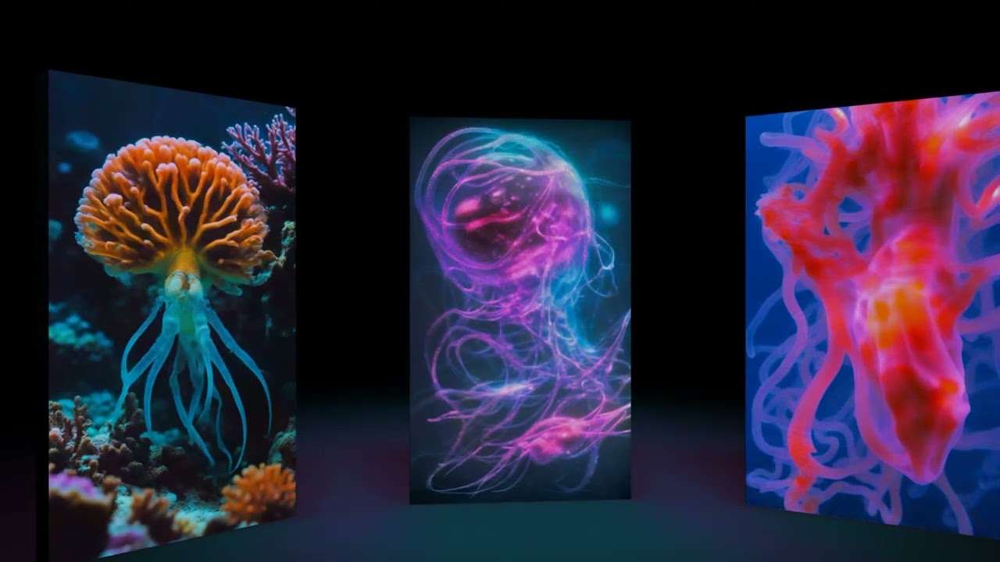
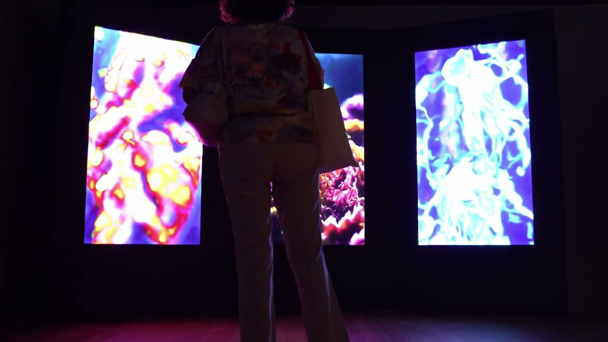

sopa primordial
primordial soup
Alexandre Rangel, 2023
Tríptico audiovisual.
A obra propõe um mergulho em um oceano de possibilidades criativas, de emoções e de interpretações imagéticas. A busca de significado na emergência de formas assistida por algoritmos de Inteligência Artificial objetiva a criação de objetos poéticos transformadores.
Audiovisual triptych.
The work proposes a dive into an ocean of creative possibilities, emotions and image interpretations. The search for meaning in the emergence of forms assisted by Artificial Intelligence algorithms aims to create transformative poetic objects.

Sopa Primordial
Pré-visualização da obra.Primordial Soup
Artwork previsualization.
Sopa Primordial
Exposição Décadas dos Oceanos - 1ª Mostra Nacional de CriptoarteCCBB Rio de Janeiro and São Paulo, 2023/2024
Primordial Soup
Expo Décadas dos Oceanos - 1ª Mostra Nacional de CriptoarteExposição CCBB Rio de Janeiro e São Paulo, 2023/2024